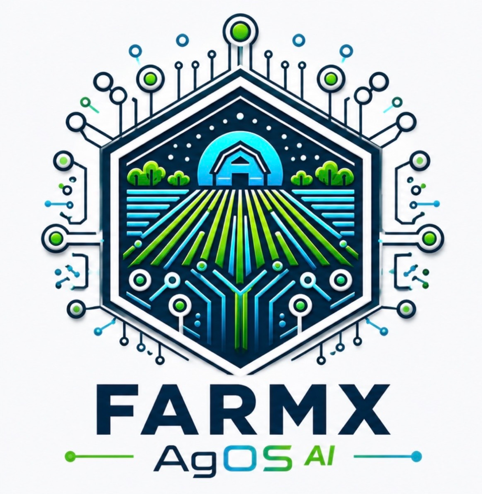

Connected
Every operational domain linked in one Agricultural Operating System.
The FarmX Platform
FarmX is not a collection of disconnected modules. It is a single living platform that connects every part of the farm — from daily field work and labour to water, machinery, stores, finance and AI.
FarmX connects the daily reality of farming — people, machinery, water, finance, agronomy, stores, assets and AI — into one living operational platform.

Every operational domain linked in one Agricultural Operating System.
AI and analytics built on structured operational truth from the farm.
Insight that flows into daily planning, execution and better decisions.
Traditional software separates departments. FarmX connects the farm.
FarmX modules are not silos. People, operations, water, machinery, stores and finance all feed into one operational picture — so decisions are made with full context, not partial data.
From task planning and field supervision to irrigation, maintenance, stock issuing and payroll — FarmX captures what happens on the farm as it happens.
That operational truth becomes the foundation for analytics, compliance and AI-assisted decision making.
As farms use FarmX, the platform builds a richer understanding of how the business actually works — connecting live IoT data, historical performance and human expertise into actionable intelligence.
FarmX creates a continuously updated operational record that helps owners, buyers, lenders and investors understand how a farming business actually performs.
Explore Digital Due DiligenceFarmX helps farms move beyond disconnected software toward one connected Agricultural Operating System.